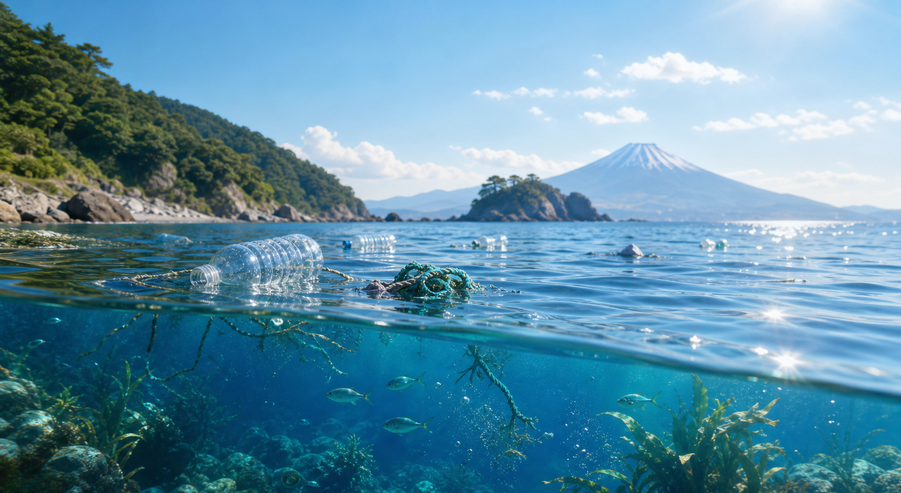

漂浮垃圾聚集在港湾、河口和洋流交汇处，影响景观、航行和近岸生物。

影响路径
一件垃圾，如何扩散成系统性压力
选择一条路径，观察海洋垃圾如何从一次接触继续传递到生物、栖息地与食物链。
影响范围
影响不会停在海岸线
同一件垃圾可能漂浮、沉降、碎裂，最终影响沿岸环境和社区生活。
沉降垃圾会覆盖底栖生物栖息地，改变原本稳定的泥沙和礁石环境。
清理成本、渔获品质和旅游体验都会受到影响，环境问题最终回到人的生活。
视觉对照
同一片海域，两种未来
切换视角，对比垃圾持续累积与生态恢复之后的环境差异。